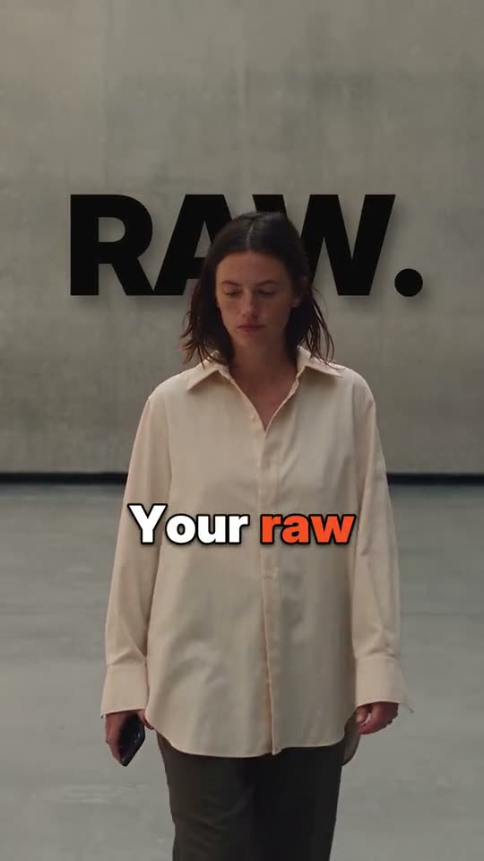

Как это работает для человека
Ни таймлайна, ни After Effects. Весь монтаж — это разговор в чате, где Higgsfield подключён как инструмент.
Кинул клип
Любое видео с телефона: говорящая голова, продукт, прогулка, тренировка. 15 секунд хватает.
Подключил Higgsfield
Higgsfield работает в чате как подключение (MCP). Один раз авторизовался — дальше чат сам зовёт нужные инструменты.
Выбрал или описал
Ткнул пресет из библиотеки или написал «сделай как новости, титры жёлтые». Чат сам подбирает пресет и меняет параметры.
Забрал ролик
Готовое видео с титрами, графикой и звуком приходит обратно в чат. Не понравилось — правишь словами.
Что внутри одного пресета
Пресет — это не фильтр поверх видео. Это сцена, которая понимает клип: где человек, где стена, как едет камера. Поэтому титры прячутся за плечо, а графика стоит на полу.

КлипКлип
Видео пользователя. В этой библиотеке вместо него стоит свежая генерация Seedance 2.5 — своя под каждый пресет, чтобы показать, на каком материале он раскрывается.
Анализ
Карта глубины, маска человека, трекинг точек и движение камеры. Считается на GPU один раз на клип.
Графика кодом
Все титры, интерфейсы, коллажи, плашки и 3D-вставки рисует код — кадр за кадром. В наборе 22 стиля титров, свой UI-кит и свой рендер 3D.
Звук
Музыка из библиотеки без прав третьих лиц и звуковые эффекты на каждое событие в кадре. Громкость сведена под соцсети.
Параметры
Тексты, цвета, шрифты, скорость и стиль титров вынесены в один файл. Именно его чат и меняет, когда ты пишешь «сделай теплее» или «поменяй надпись».
Связка с Higgsfield
Чат — это интерфейс. Higgsfield — руки: генерация, хранение медиа и запуск рендера. Пресеты живут рядом как отдельный движок.
Чат
Claude или ChatGPT. Человек кидает клип и пишет, что хочет.
Higgsfield MCP
Принимает клип, отдаёт список пресетов, при надобности генерирует недостающие кадры.
Движок пресетов
Анализ клипа и рендер графики на GPU-ферме. Каждый ролик — свой короткий заказ.
Готовый ролик
Возвращается в чат и в медиатеку Higgsfield.
Это схема для обсуждения. Сегодня работает так: клипы сгенерированы через Higgsfield, все 100 пресетов отрендерены нашим движком на арендованных RTX 4090. Сквозной путь «клип пользователя → пресет → ролик в чате» ещё нужно собрать как сервис.
Пример того, как может выглядеть разговор.
Настоящий файл параметров пресета 001 «Word Wall». Слова «поменяй надпись» или «сделай оранжевый синим» превращаются в правку этих строк.
Библиотека
10 семейств по 10 пресетов, по 15 секунд. Нечётные номера вертикальные 9:16, чётные горизонтальные 4:3. Нажми на ролик, чтобы открыть его со звуком и описанием.